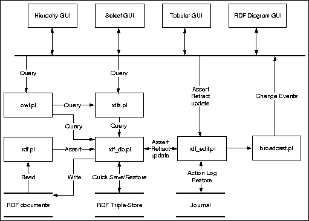

SWI-Prolog/XPCE Semantic Web Library
Jan Wielemaker
SWI,
University of Amsterdam
The Netherlands
E-mail: jan@swi.psy.uva.nl
Abstract
|
This document describes a library for dealing with standards from the
W3C standard for the Semantic Web.
Like the standards themselves (RDF, RDFS and OWL) this infrastructure is
modular. It consists of Prolog packages for reading, querying and
storing semantic web documents as well as XPCE libraries that provide
visualisation and editing. The Prolog libraries can be used without the
XPCE GUI modules. The library can handle upto about 2 million
RDF triples on current commonly used hardware (256MB memory,
Pentium 1.5Ghz).
|
SWI-Prolog has started support for web-documents with the development
of a small and fast SGML/XML parser, followed by an RDF parser (early
2000). With the semweb library we provide more high level
support for manipulating semantic web documents. The semantic web is the
likely point of orientation for knowledge representation in the future,
making a library designed in its spirit promising.
Central to this library is the module rdf_db.pl,
providing storage and basic querying for RDF triples. This triple store
is filled using the RDF parser realised by rdf.pl. The
storage module can quickly save and load (partial) databases. The
modules rdfs.pl and owl.pl add querying in
terms of the more powerful RDFS and OWL languages. Module rdf_edit.pl
adds editing, undo, journaling and change-forwarding. Finally, a variety
of XPCE modules visualise and edit the database. Figure figure
1 summarised the modular design.

|
Figure 1 : Modules for the Semantic Web library |
The central module is called rdf_db. It provides storage
and indexed querying of RDF triples. Triples are stored as a quintuple.
The first three elements denote the RDF triple. File and
Line provide information about the origin of the triple.
{Subject Predicate Object File Line}
The actual storage is provided by the foreign language (C)
module rdf_db.c. Using a dedicated C-based implementation
we can reduced memory usage and improve indexing capabilities. (1)
Currently the following indexing is provided.
- Any of the 3 fields of the triple
- Subject + Predicate and Predicate + Object
- Predicates are indexed on the highest property.
In other words, if predicates are related through
subPropertyOf predicates indexing happens on the most
abstract predicate. This makes calls to rdf_has/4
very efficient.
- String literal Objects are indexed case-insensitive to
make case-insensitive queries fully indexed. See rdf/3.
- rdf(?Subject, ?Predicate,
?Object)
-
Elementary query for triples. Subject and Predicate
are atoms representing the fully qualified URL of the resource. Object
is either an atom representing a resource or
literal(Value)
if the object is a literal value. If a value of the form
NameSpaceID : LocalName is provided it is expanded to a
ground atom using expand_goal/2.
This implies you can use this construct in compiled code without paying
a preformance penalty. See also
section 3.5. Literal values take one of the
following forms:
- Atom
-
If the value is a simple atom it is the textual representation of a
string literal without explicit type or language (
xml:lang)
qualifier.
- lang(LangID, Atom)
-
Atom represents the text of a string literal qualified with
the given language.
- type(TypeID, Value)
-
Used for attributes qualified using the
rdf:dataType
TypeID. The Value is either the textual
representation or a natural Prolog representation. See the option
convert_typed_literal(:Convertor) of the parser. The
storage layer provides efficient handling of atoms, integers and floats.
All other data is represented as a Prolog record.
For string querying purposes, Object can be of the form
literal(+Query, -Value), where Query is one of
- exact(+Text)
-
Perform exact, but case-insensitive match. This query is fully indexed.
- substring(+Text)
-
Match any literal that contains Text as a case-insensitive
substring. The query is not indexed on Object.
- word(+Text)
-
Match any literal that contains Text delimited by a non
alpha-numeric character, the start or end of the string. The query is
not indexed on Object.
- prefix(+Text)
-
Match any literal that starts with Text. This call is
intended for completion. The query is not indexed on Object.
- like(+Pattern)
-
Match any literal that matches Pattern case insensitively,
where the `*' character in Pattern matches zero or more
characters.
Backtracking never returns duplicate triples. Duplicates can be
retrieved using rdf/4.
- rdf(?Subject, ?Predicate,
?Object, ?Source)
-
As rdf/3 but in addition
return the source-location of the triple. The source is either a plain
atom or a term of the format
Atom : Integer where Atom is intended to be used
as filename or URL and Integer for representing the
line-number. Unlike rdf/3,
this predicate does not remove duplicates from the result set.
- rdf_has(?Subject,
?Predicate, ?Object, -TriplePred)
-
This query exploits the RDFS
subPropertyOf relation. It
returns any triple whose stored predicate equals Predicate or
can reach this by following the recursive subPropertyOf
relation. The actual stored predicate is returned in TriplePred.
The example below gets all subclasses of an RDFS (or OWL) class, even if
the relation used is not rdfs:subClassOf, but a
user-defined sub-property thereof. (2)
subclasses(Class, SubClasses) :-
findall(S, rdf_has(S, rdfs:subClassOf, Class), SubClasses).
|
Note that rdf_has/4
and rdf_has/3 can
return duplicate answers if they use a different TriplePred.
- rdf_has(?Subject,
?Predicate, ?Object)
-
Same as
rdf_has(Subject, Predicate, Object, _).
- rdf_reachable(?Subject,
+Predicate, ?Object)
-
Is true if Object can be reached from Subject
following the transitive predicate Predicate or a
sub-property thereof. When used with either Subject or Object
unbound, it first returns the origin, followed by the reachable nodes in
breath-first search-order. It never generates the same node twice and is
robust against cycles in the transitive relation. With all arguments
instantiated it succeeds deterministically of the relation if a path can
be found from Subject to Object. Searching starts
at Subject, assuming the branching factor is normally lower.
A call with both Subject and Object unbound raises
an instantiation error. The following example generates all subclasses
of
rdfs:Resource:
?- rdf_reachable(X, rdfs:subClassOf, rdfs:'Resource').
X = 'http://www.w3.org/2000/01/rdf-schema#Resource' ;
X = 'http://www.w3.org/2000/01/rdf-schema#Class' ;
X = 'http://www.w3.org/1999/02/22-rdf-syntax-ns#Property' ;
...
|
- rdf_subject(?Subject)
-
Enumerate resources appearing as a subject in a triple. The main reason
for this predicate is to generate the known subjects without
duplicates as one gets using
rdf(Subject, _, _).
The predicates below form an experimental interface to provide more
reasoning inside the kernel of the rdb_db engine. Note that
symetric, inverse_of and transitive
are not yet supported by the rest of the engine.
- rdf_set_predicate(+Predicate,
+Property)
-
Define a property of the predicate. Defined properties are listed with rdf_predicate_property/2.
- rdf_predicate_property(+Predicate,
-Property)
-
Query properties of a defined predicate. Currently defined properties
are given below.
- symmetric(Bool)
-
True if the predicate is defined to be symetric. I.e.
{A} P {B} implies {B} P {A}.
- inverse_of(Inverse)
-
True if this predicate is the inverse of Inverse.
- transitive(Bool)
-
True if this predicate is transitive.
- triples(Triples)
-
Unify Triples with the number of existing triples using this
predicate as second argument. Reporting the number of triples is
intended to support query optimization.
- subject_branch_factor(-Float)
-
Unify Float with the average number of triples associated
with each unique value for the subject-side of this relation. If there
are no triples the value 0.0 is returned. This value is cached with the
predicate and recomputed only after substantial changes to the triple
set associated to this relation. This property is indented for path
optimalisation when solving conjunctions of rdf/3
goals.
- object_branch_factor(-Float)
-
Unify Float with the average number of triples associated
with each unique value for the object-side of this relation. In addition
to the comments with the subject_branch_factor property, uniqueness of
the object value is computed from the hash key rather than the actual
values.
As depicted in figure 1, there are two
levels of modification. The rdf_db module simply modifies,
where the rdf_edit library provides transactions and undo
on top of this. Applications that wish to use the rdf_edit
layer must never use the predicates from this section directly.
- rdf_assert(+Subject,
+Predicate, +Object)
-
Assert a new triple into the database. This is equivalent to
rdf_assert/4
using SourceRef
user. Subject and
Predicate are resources. Object is either a
resource or a term literal(Value). See rdf/3
for an explanation of Value for typed and language qualified
literals. All arguments are subject to name-space expansion (see section
3.5).
- rdf_assert(+Subject,
+Predicate, +Object, +SourceRef)
-
As rdf_assert/3,
adding SourceRef to specify the orgin of the triple. SourceRef
is either an atom or a term of the format
Atom:Int where Atom normally refers to
a filename and Int to the line-number where the description
starts.
- rdf_retractall(?Subject,
?Predicate, ?Object)
-
Removes all matching triples from the database. Previous Prolog
implementations also provided a backtracking rdf_retract/3, but
this proved to be rarely used and could always be replaced with
rdf_retractall/3.
As rdf_retractall/4
using an unbound SourceRef.
- rdf_retractall(?Subject,
?Predicate, ?Object, ?SourceRef)
-
As rdf_retractall/4,
also matching on the SourceRef. This is particulary useful to
update all triples coming from a loaded file.
- rdf_update(+Subject,
+Predicate, +Object, +Action)
-
Replaces one of the three fields on the matching triples depending on Action:
- subject(Resource)
-
Changes the first field of the triple.
- predicate(Resource)
-
Changes the second field of the triple.
- object(Object)
-
Changes the last field of the triple to the given resource or
literal(Value).
- source(Source)
-
Changes the source location (payload). Not that updating the
source has no consequences for the semantics and therefore the
generation (see rdf_generation/1)
is not updated.
- rdf_update(+Subject,
+Predicate, +Object, +Source,+Action)
-
As rdf_update/4
but allows for specifying the source.
The rdf_db module can read and write RDF-XML for import
and export as well as a binary format built for quick load and save
described in section 3.4.2. Here are the
predicates for portable RDF load and save.
- rdf_load(+In)
-
Load triples from In, which is either a stream opened for
reading or an atom specifying a filename. This predicate calls
process_rdf/3 to read the source
one description at a time, avoiding limits to the size of the input. If In
is a file, rdf_load/1
provides for caching the results for quick-load using rdf_load_db/1
described below. Caching is activated by creating a directory
.cache (or _cache on Windows) in the directory
holding the .rdf files. Cached RDF files are loaded at
approx. 25 times the speed of RDF-XML files.
- rdf_load(+File, +Options)
-
As rdf_load/1,
providing additional options. The options are handed to the RDF parser
as implemented by process_rdf/3.
- rdf_unload(+Spec)
-
Remove all triples loaded from Spec. In the current
implementation
Spec must refer to a file.
- rdf_save(+File)
-
Save all known triples to the given File. Same as
rdf_save(File, []).
- rdf_save(+File, +Options)
-
Save with options. Provided options are:
- db(+FileRef)
-
Save all triples whose file-part of their SourceRef matches
FileRef to the given File. Saving arbitrary
selections is possible using predicates from section
3.4.1.
- anon(+Bool)
-
if
anon(false) is provided anonymous resources are only
saved if the resource appears in the object field of another triple that
is saved.
- convert_typed_literal(:Converter)
-
If present, raw literal values are first passed to Converter
to apply the reverse of the
convert_typed_literal option of
the RDF parser. The Converter is called with the same
arguments as in the RDF parser, but now with the last argument
instantiated and the first two unbound. A proper convertor that can be
used for both loading and saving must be a logical predicate.
- rdf_source(?File)
-
Test or enumerate the files loaded using rdf_load/1.
- rdf_make
-
Re-load all RDF sourcefiles (see rdf_source/1)
that have changed since they were loaded the last time. This implies all
triples that originate from the file are removed and the file is
re-loaded. If the file is cached a new cache-file is written. Please
note that the new triples are added at the end of the database, possibly
changing the order of (conflicting) triples.
Sometimes it is necessary to make more arbitrary selections of
material to be saved or exchange RDF descriptions over an open network
link. The predicates in this section provide for this.
- rdf_save_header(+Stream,
+Options)
-
Save an RDF header, with the XML header,
DOCTYPE,
ENTITY and opening the rdf:RDF element with
appropriate namespace declarations. It uses the primitives from section
3.5 to generate the required namespaces and desired short-name. Options
is one of:
- db(+FileRef)
-
Only search for namespaces used in triples labeled with
FileRef.
- rdf_save_footer(+Stream)
-
Close the work opened with rdf_save_header/2.
- rdf_save_subject(+Stream,
+Subject, +FileRef)
-
Save everything known about Subject that matches FileRef.
Using an variable for FileRef saves all triples with
Subject.
Loading and saving RDF format is relatively slow. For this reason we
designed a binary format that is more compact, avoids the complications
of the RDF parser and avoids repetitive lookup of (URL) identifiers.
Especially the speed improvement of about 25 times is worth-while when
loading large databases. These predicates are used for caching by
rdf_load/[1,2]
under certain conditions.
- rdf_save_db(+File)
-
Save all known triples into File. The saved version includes
the
SourceRef information.
- rdf_save_db(+File,
+FileRef)
-
Save all triples with SourceRef FileRef,
regardless of the line-number. For example, using
user all
information added using rdf_assert/3
is stored in the database.
- rdf_load_db(+File)
-
Load triples from File.
The rdf_db library provides for MD5 digests. An
MD5 digest is a 128 bit long hash key computed from the triples based on
the RFC-1321 standard. MD5 keys are computed for each individual triple
and added together to compute the final key, resulting in a key that
describes the triple-set but is independant from the order in which the
triples appear. It is claimed that it is practically impossible for two
different datasets to generate the same MD5 key. The Triple20 editor
uses the MD5 key for detecting whether the triples associated to a file
have changed as well as to maintain a directory with snapshots of
versioned ontology files.
- rdf_md5(+Source, -MD5)
-
Return the MD5 digest for all triples in the database associated to
Source. The MD5 digest itself is represented as an
atom holding a 32-character hexadecimal string. The library maintains
the digest incrementally on rdf_load/[1,2], rdf_load_db/1, rdf_assert/[3,4]
and rdf_retractall/[3,4].
Checking whether the digest has changed since the last rdf_load/[1,2]
call provides a practical means for checking whether the file needs to
be saved.
- rdf_atom_md5(+Text,
+Times, -MD5)
-
Computes the MD5 hash from Text, which is an atom, string or
list of character codes. Times is an integer >= 1.
When
> 0, the MD5 algorithm is repeated Times times
on the generated hash. This can be used for password encryption
algorithms to make generate-and-test loops slow.
This predicate bears little relation to RDF handling. It is provided
because the RDF library already contains the MD5 algorithm and semantic
web services may involve security and consistency checking. This
predicate provides a platform independant alternative to the
library(crypt) library provided with the clib
package.
Prolog code often contains references to constant resources in a
known XML namespace. For example,
http://www.w3.org/2000/01/rdf-schema#Class refers to the
most general notion of a class. Readability and maintability concerns
require for abstraction here. The dynamic and multifile predicate
rdf_db:ns/2 maintains a mapping between short meaningful names and
namespace locations very much like the XML xmlns construct.
The initial mapping contains the namespaces required for the semantic
web languages themselves:
ns(rdf, 'http://www.w3.org/1999/02/22-rdf-syntax-ns#').
ns(rdfs, 'http://www.w3.org/2000/01/rdf-schema#').
ns(owl, 'http://www.w3.org/2002/7/owl#').
ns(xsd, 'http://www.w3.org/2000/10/XMLSchema#').
ns(dc, 'http://purl.org/dc/elements/1.1/').
ns(eor, 'http://dublincore.org/2000/03/13/eor#').
|
All predicates for the semweb libraries use goal_expansion/2
rules to make the SWI-Prolog compiler rewrite terms of the form
Id : Local into the fully qualified URL. In addition, the
following predicates are supplied:
- rdf_equal(Resource1,
Resource2)
-
Defined as
Resource1, Resource2 = Resource1, Resource2 As
this predicate is subject to goal-expansion it can be used to obtain or
test global URL values to readable values. The following goal unifies X
with
http://www.w3.org/2000/01/rdf-schema#Class without more
runtime overhead than normal Prolog unification.
rdf_equal(rdfs:'Class', X)
|
- rdf_register_ns(+Alias,
+URL)
-
Register Alias as a shorthand for URL. Note that
the registration must be done before loading any files using them as
namespace aliases are handled at compiletime through goal_expansion/2.
- rdf_global_id(?Alias:Local,
?Global)
-
Runtime translation between Alias and Local and a
Global URL. Expansion is normally done at compiletime. This
predicate is often used to turn a global URL into a more readable term.
- rdf_global_object(?Object,
?NameExpandedObject)
-
As rdf_global_id/2,
but also expands the type field if the object is of the form
literal(type(Type,
Value)). This predicate is used for goal expansion of the
object fields in rdf/3
and similar goals.
- rdf_global_term(+Term0,
-Term)
-
Expands all Alias:Local in Term0 and
return the result in Term. Use infrequently for runtime
expansion of namespace identifiers.
- rdf_split_url(?Base,
?Local, ?URL)
-
Split a URL into a prefix and local part if used in mode -,-,+ or simply
behave as atom_concat/3 in other
modes. The URL is split on the last
# or /
character.
This section describes the remaining predicates of the rdf_db
module.
- rdf_node(-Id)
-
Generate a unique reference. The returned atom is guaranteed not to
occur in the current database in any field of any triple.
- rdf_bnode(-Id)
-
Generate a unique blank node reference. The returned atom is guaranteed
not to occur in the current database in any field of any triple and
starts with '__bnode'.
- rdf_is_bnode(+Id)
-
Succeeds if Id is a blank node identifier (also called
anonymous resource). In the current implementation this implies
it is an atom starting with a double underscore.
- rdf_source_location(+Subject,
-SourceRef)
-
Return the source-location as File:Line of the
first triple that is about Subject.
- rdf_generation(-Generation)
-
Returns the Generation of the database. Each modification to
the database increments the generation. It can be used to check the
validity of cached results deduced from the database.
- rdf_statistics(?Statistics)
-
Report statistics collected by the
rdf_db module. Defined
values for Statistics are:
- lookup(?Index, -Count)
-
Number of lookups using a pattern of instantiated fields. Index
is a term
rdf(S,P,O), where S, P and O
are either + or -. For example rdf(+,+,-)
returns the lookups with subject and predicate specified and object
unbound.
- properties(-Count)
-
Number of unique values for the second field of the triple set.
- sources(-Count)
-
Number of files loaded through rdf_load/1.
- subjects(-Count)
-
Number of unique values for the first field of the triple set.
- triples(-Count)
-
Total number of triples in the database.
- rdf_match_label(+Method,
+Search, +Atom)
-
True if Search matches Atom as defined by Method.
All matching is performed case-insensitive. Defines methods are:
- exact
-
Perform exact, but case-insensitive match.
- substring
-
Search is a sub-string of Text.
- word
-
Search appears as a whole-word in Text.
- prefix
-
Text start with Search.
- like
-
Text matches Search, case insensitively, where the
`*' character in Search matches zero or more characters.
- rdf_reset_db
-
Erase all triples from the database and reset all counts and statistics
information.
- rdf_version(-Version)
-
Unify Version with the library version number. This number
is, like to the SWI-Prolog version flag, defined as 10,000 ×
Major + 100 × Minor + Patch.
This RDF low-level module has been created after two year
experimenting with a plain Prolog based module and a brief evaluation of
a second generation pure Prolog implementation. The aim was to be able
to handle upto about 2 million triples on standard (notebook) hardware
and deal efficiently with subPropertyOf which was
identified as a crucial feature of RDFS to realise fusion of different
data-sets.
The following issues are identified and not solved in suitable
manner.
- Logical update
-
as provided by Prolog means that active queries are not affected by
subsequent modification of the database. The current C-based
implementation adheres the immediate update model, mainly
because the current foreign language interface does not provide the
required information to realise logical updates in C.
subPropertyOf of subPropertyOf-
is not supported.
- Equivalence
-
Similar to
subPropertyOf, it is likely to be profitable to
handle resource identity efficient. The current system has no support
for it.
The library(rdfs) library
adds interpretation of the triple store in terms of concepts from
RDF-Schema (RDFS).
The predicates in this section explore the rdfs:subPropertyOf,
rdfs:subClassOf and rdf:type relations. Note
that the most fundamental of these, rdfs:subPropertyOf, is
also used by rdf_has/[3,4].
- rdfs_subproperty_of(?SubProperty,
?Property)
-
True if SubProperty is equal to Property or Property
can be reached from SubProperty following the
rdfs:subPropertyOf relation. It can be used to test as well
as generate sub-properties or super-properties. Note that the commonly
used semantics of this predicate is wired into rdf_has/[3,4]. (3). (4)
- rdfs_subclass_of(?SubClass,
?Class)
-
True if SubClass is equal to Class or Class
can be reached from SubClass following the
rdfs:subClassOf relation. It can be used to test as well as
generate sub-classes or super-classes. (5).
- rdfs_class_property(+Class,
?Property)
-
True if the domain of Property includes Class.
Used to generate all properties that apply to a class.
- rdfs_individual_of(?Resource,
?Class)
-
True if Resource is an indivisual of Class. This
implies
Resource has an
rdf:type property that refers to
Class or a sub-class thereof. Can be used to test, generate
classes Resource belongs to or generate individuals described
by Class.
The
RDF construct rdf:parseType=Collection
constructs a list using the rdf:first and rdf:next
relations.
- rdfs_member(?Resource,
+Set)
-
Test or generate the members of Set. Set is either
an individual of
rdf:List or rdf:Container.
- rdfs_list_to_prolog_list(+Set,
-List)
-
Convert Set, which must be an individual of
rdf:List
into a Prolog list of objects.
- rdfs_assert_list(+List,
-Resource)
-
If List is a list of resources, create an RDF list Resource
that reflects these resources. Resource and the sublist
resources are generated with rdf_bnode/1.
Textual search is partly handled by the predicates from the
library(rdf_db) module and its underlying C-library. For
example, literal objects are hashed case-insensitive to speed up the
commonly used case-insensitive search.
- rdfs_label(?Resource,
?Language, ?Label)
-
Extract the label from Resource or generate all resources
with the given Label. The label is either associated using a
sub-property of
rdfs:label or it is extracted from the URL
using rdf_split_url/3. Language
is unified to the value of the xml:lang attribute of the
label or a variable if the label has no language specified.
- rdfs_label(?Resource,
?Label)
-
Defined as
rdfs_label(Resource, _, Label).
- rdfs_ns_label(?Resource,
?Language, ?Label)
-
Similar to rdfs_label/2,
but prefixes the result using the declared namespace alias (see section
3.5) to facilitate user-friendly labels in applications using
multiple namespaces that may lead to confusion.
- rdfs_ns_label(?Resource,
?Label)
-
Defined as
rdfs_ns_label(Resource, _, Label).
- rdfs_find(+String,
+Description, +Properties, +Method, -Subject)
-
Find (on backtracking) Subjects
that satisfy a search specification for textual attributes. String
is the string searched for. Description is an OWL description
(see section ??) specifying candidate resources. Properties
is a list of properties to search for literal objects where rdfs:label
is replaced by a call to rdfs_label/2
and finally, Method defines the textual matching algorithm.
All textual mapping is performed case-insensitive. The matching-methods
are described with rdf_match_label/3.
The
module rdf_edit.pl is a layer than encasulates the
modification predicates from section 3.3
for use from a (graphical) editor of the triple store. It adds the
following features:
- Transaction management
Modifications are grouped into transactions to safeguard the
system from failing operations as well as provide meaningfull chunks for
undo and journalling.
- Undo
Undo and redo-transactions using a single mechanism to support
user-friendly editing.
- Journalling
Record all actions to support analysis, versioning, crash-recovery and
an alternative to saving.
Transactions group low-level modification actions together.
- rdfe_transaction(:Goal)
-
Run Goal, recording all modifications to the triple store
made through section 5.3. Execution is
performed as in once/1. If
Goal succeeds the changes are committed. If Goal
fails or throws an exception the changes are reverted.
Transactions may be nested. A failing nested transaction only reverts
the actions performed inside the nested transaction. If the outer
transaction succeeds it is committed normally. Contrary, if the outer
transaction fails, comitted nested transactions are reverted as well. If
any of the modifications inside the transaction modifies a protected
file (see rdfe_set_file_property/2)
the transaction is reverted and rdfe_transaction/1
throws a permission error.
A successful outer transaction (`level-0') may be undone using
rdfe_undo/0.
- rdfe_transaction(:Goal,
+Name)
-
As rdfe_transaction/1,
naming the transaction Name. Transaction naming is intended
for the GUI to give the user an idea of the next undo action. See also rdfe_set_transaction_name/1
and
rdfe_transaction_name/2.
- rdfe_set_transaction_name(+Name)
-
Set the `name' of the current transaction to Name.
- rdfe_transaction_name(?TID,
?Name)
-
Query assigned transaction names.
- rdfe_transaction_member(+TID,
-Action)
-
Enumerate the actions that took place inside a transaction. This can be
used by a GUI to optimise the MVC (Model-View-Controller) feedback loop. Action
is one of:
- assert(Subject, Predicate, Object)
-
- retract(Subject, Predicate, Object)
-
- update(Subject, Predicate, Object, Action)
-
- file(load(Path))
-
- file(unload(Path))
-
- rdfe_is_modified(?File)
-
Enumerate/test whether File is modified sinds it was loaded
or sinds the last call to rdfe_clear_modified/1.
Whether or not a file is modified is determined by the MD5 checksum of
all triples belonging to the file.
- rdfe_clear_modified(+File)
-
Set the unmodified-MD5 to the current MD5 checksum. See also
rdfe_is_modified/1.
- rdfe_set_file_property(+File,
+Property)
-
Control access right and default destination of new triples.
Property is one of
- access(+Access)
-
Where access is one of
ro or rw. Access ro
is default when a file is loaded for which the user has no write access.
If a transaction (see rdfe_transaction/1)
modifies a file with access ro the transaction is reversed.
- default(+Default)
-
Set this file to be the default destination of triples. If
Default is
fallback it is only the default for
triples that have no clear default destination. If it is all
all new triples are added to this file.
- rdfe_get_file_property(?File,
?Property)
-
Query properties set with rdfe_set_file_property/2.
The following predicates encapsulate predicates from the rdf_db
module that modify the triple store. These predicates can only be called
when inside a transaction. See rdfe_transaction/1.
- rdfe_assert(+Subject,
+Predicate, +Object)
-
Encapsulates rdf_assert/3.
- rdfe_retractall(?Subject,
?Predicate, ?Object)
-
Encapsulates rdf_retractall/3.
- rdfe_update(+Subject,
+Predicate, +Object, +Action)
-
Encapsulates rdf_update/4.
- rdfe_load(+In)
-
Encapsulates rdf_load/1.
- rdfe_unload(+In)
-
Encapsulates rdf_unload/1.
This section describes a (yet very incomplete) set of more high-level
operations one would like to be able to perform. Eventually this set may
include operations based on RDFS and OWL.
- rdfe_delete(+Resource)
-
Delete all traces of resource. This implies all triples where
Resource appears as subject, predicate or
object. This predicate starts a transation.
Undo aims at user-level undo operations
from a (graphical) editor.
- rdfe_undo
-
Revert the last outermost (`level 0') transaction (see
rdfe_transaction/1).
Successive calls go further back in history. Fails if there is no more
undo information.
- rdfe_redo
-
Revert the last rdfe_undo/0.
Successive calls revert more rdfe_undo/0
operations. Fails if there is no more redo information.
- rdfe_can_undo(-TID)
-
Test if there is another transaction that can be reverted. Used for
activating menus in a graphical environment. TID is unified
to the transaction id of the action that will be reverted.
- rdfe_can_redo(-TID)
-
Test if there is another undo that can be reverted. Used for activating
menus in a graphical environment. TID is unified to the
transaction id of the action that will be reverted.
Optionally, every action through this
module is immediately send to a
journal-file. The journal provides a full log of all actions
with a time-stamp that may be used for inspection of behaviour, version
management, crash-recovery or an alternative to regular save operations.
- rdfe_open_journal(+File,
+Mode)
-
Open a existing or new journal. If Mode equala
append
and File exists, the journal is first replayed. See
rdfe_replay_journal/1.
If Mode is write the journal is truncated if it
exists.
- rdfe_close_journal
-
Close the currently open journal.
- rdfe_current_journal(-Path)
-
Test whether there is a journal and to which file the actions are
journalled.
- rdfe_replay_journal(+File)
-
Read a jorunal, replaying all actions in it. To do so, the system reads
the journal a transaction at a time. If the transaction is closed with a commit
it executes the actions inside the journal. If it is closed with a rollback
or not closed at all due to a crash the actions inside the journal are
discarded. Using this predicate only makes sense to inspect the state at
the end of a journal without modifying the journal. Normally a journal
is replayed using the
append mode of rdfe_open_journal/2.
To realise
a modular graphical interface for editing the triple store, the system
must use some sort of event mechanism. This is implemented by
the XPCE library library(broadcast) which is described in
the XPCE
User Guide. In this section we describe the terms brodcasted by the
library.
- rdf_transaction(+Id)
-
A `level-0' transaction has been committed. The system passes the
identifier of the transaction in Id. In the current
implementation there is no way to find out what happened inside the
transaction. This is likely to change in time.
If a transaction is reverted due to failure or exception no
event is broadcasted. The initiating GUI element is supposed to handle
this possibility itself and other components are not affected as the
triple store is not changed.
- rdf_undo(+Type, +Id)
-
This event is broadcasted after an rdfe_undo/0
or rdfe_redo/0.
Type is one of
undo or redo and Id
identifies the transaction as above.
- note-1
-
The orginal implementation was in Prolog. This version was implemented
in 3 hours, where the C-based implementation costed a full week. The
C-based implementation requires about half the memory and provides about
twice the performance.
- note-2
-
This predicate realises semantics defined in RDF-Schema rather than RDF.
It is part of the
library(rdf_db) module because the
indexing of this module incorporates the rdfs:subClassOf
predicate.
- note-3
-
BUG: The current implementation cannot deal with cycles
- note-4
-
BUG: The current implementation cannot deal with predicates that are an
rdfs:subPropertyOf
of rdfs:subPropertyOf, such as owl:samePropertyAs.
- note-5
-
BUG: The current implementation cannot deal with cycles
- A
-
- atom_concat/3
-
3.5
- B
-
- broadcast
-
5.7
- C
-
- Collection,parseType
-
4.2
- E
-
- event
-
5.7
- expand_goal/2
-
3.1
- G
-
- goal_expansion/2
-
3.5 3.5
- J
-
- journal
-
5 5.6
- O
-
- once/1
-
5.1
- P
-
- parseType,Collection
-
4.2
- process_rdf/3
-
3.4 3.4
- R
-
- rdf/3
-
3 3.1 3.1 3.2 3.3 3.5
- rdf/4
-
3.1
- rdf_assert/3
-
3.3 3.4.2 5.3
- rdf_assert/4
-
3.3
- rdf_assert/[3,4]
-
3.4.3
- rdf_atom_md5/3
-
- rdf_bnode/1
-
4.2
- rdfe_assert/3
-
- rdfe_can_redo/1
-
- rdfe_can_undo/1
-
- rdfe_clear_modified/1
-
5.2
- rdfe_close_journal/0
-
- rdfe_current_journal/1
-
- rdfe_delete/1
-
- rdfe_get_file_property/2
-
- rdfe_is_modified/1
-
5.2
- rdfe_load/1
-
- rdfe_open_journal/2
-
5.6
- rdf_equal/2
-
- rdfe_redo/0
-
5.7
- rdfe_replay_journal/1
-
5.6
- rdfe_retractall/3
-
- rdfe_set_file_property/2
-
5.1 5.2
- rdfe_set_transaction_name/1
-
5.1
- rdfe_transaction/1
-
5.1 5.1 5.2 5.3 5.5
- rdfe_transaction/2
-
- rdfe_transaction_member/2
-
- rdfe_transaction_name/2
-
5.1
- rdfe_undo/0
-
5.1 5.5 5.5 5.7
- rdfe_unload/1
-
- rdfe_update/4
-
- rdf_generation/1
-
3.3
- rdf_global_id/2
-
3.5
- rdf_global_object/2
-
- rdf_global_term/2
-
- rdf_has/3
-
3.1
- rdf_has/4
-
3 3.1
- rdf_has/[3,4]
-
4.1 4.1
- rdf_is_bnode/1
-
- rdf_load/1
-
3.4 3.4 3.4 3.6 5.3
- rdf_load/2
-
- rdf_load/[1,2]
-
3.4.2 3.4.3 3.4.3
- rdf_load_db/1
-
3.4 3.4.3
- rdf_make/0
-
- rdf_match_label/3
-
4.3
- rdf_md5/2
-
- rdf_node/1
-
- rdf_predicate_property/2
-
3.2
- rdf_reachable/3
-
- rdf_register_ns/2
-
- rdf_reset_db/0
-
- rdf_retractall/3
-
3.3 5.3
- rdf_retractall/4
-
3.3 3.3
- rdf_retractall/[3,4]
-
3.4.3
- rdfs_assert_list/2
-
- rdf_save/1
-
- rdf_save/2
-
- rdf_save_db/1
-
- rdf_save_footer/1
-
- rdf_save_header/2
-
3.4.1
- rdf_save_subject/3
-
- RDF-Schema
-
4
- rdfs_class_property/2
-
- rdf_set_predicate/2
-
- rdfs_find/5
-
- rdfs_individual_of/2
-
- rdfs_label/2
-
4.3 4.3
- rdfs_label/3
-
- rdfs_list_to_prolog_list/2
-
- rdfs_member/2
-
- rdfs_ns_label/2
-
- rdfs_ns_label/3
-
- rdf_source/1
-
3.4
- rdf_source_location/2
-
- rdf_split_url/3
-
4.3
- rdfs_subclass_of/2
-
- rdfs_subproperty_of/2
-
- rdf_statistics/1
-
- rdf_subject/1
-
- rdf_unload/1
-
5.3
- rdf_update/4
-
3.3 5.3
- rdf_update/5
-
- rdf_version/1
-
- S
-
- search
-
4.3
- T
-
- transactions
-
5
- U
-
- undo
-
5 5.5